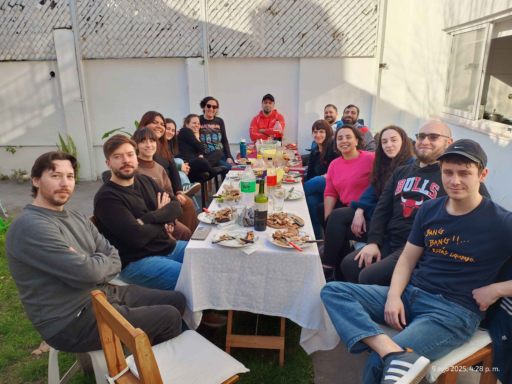
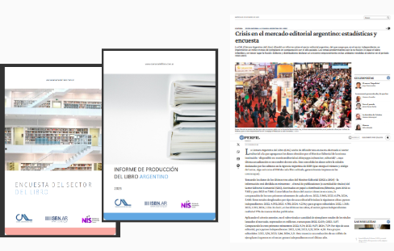
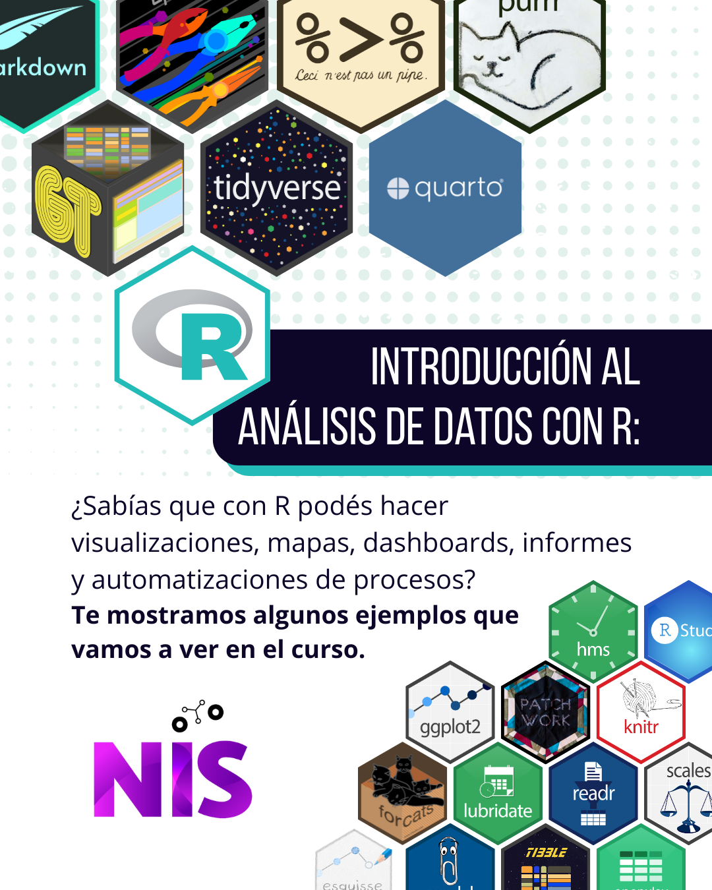

Uso de R en procesos colaborativos de producción estadística y formación: la experiencia del NIS
Betsy Cohen
Núcleo de Innovación Social (NIS)
Ariana Bardauil
Núcleo de Innovación Social (NIS)
¿Quiénes somos?
Equipo interdisciplinario en la intersección entre ciencias sociales, datos y software libre.
Buscamos aplicar herramientas de código abierto (R, Python) a problemas reales, desde una lógica cooperativa y situada.
Empoderar organizaciones para tomar decisiones informadas y transformar su realidad.

Reunión de equipo NIS 2025
¿Por qué el NIS?
Falta de espacios donde las ciencias sociales discutan y produzcan datos desde una perspectiva crítica y de acción.
Combinar saberes sociales con herramientas técnicas y fortalecer sectores culturales y comunitarios.
R en acción: el sector editorial
Esquema de circuito para la elaboración del tablero Monitor Editorial del Sector Editorial Comercial (SEC). https://monitoreditorialcal.shinyapps.io/monitor_editorial/ Nota: El logo del NIS en el diagrama identifica el equipo responsable del procesamiento, no un paquete de R.
Encuestas al sector
Relevamientos online a editoriales y librerías.
Única fuente sistemática de información sobre ventas del sector en Argentina.
Automatización en R: recolección, limpieza y visualización.
Desafío: baja tasa de respuesta → migración a panel + reportes personalizados (Quarto).

Portadas de los informes CAL y capturas de su impacto en el matutino Perfil 21-12-2024 https://www.perfil.com/noticias/cultura/crisis-en-el-mercado-editorial-argentino-estadisticas-y-encuesta.phtml
Formación y comunidad
Cursos y talleres de R para ciencias sociales (60+ participantes en AR, UY y CL).
Materiales reproducibles en Quarto y sitio web colaborativo.
Construcción de comunidad: colegas que aprenden de colegas.

Portada para Instagram del curso Introducción al análisis de datos con R realizado en Agosto de 2025
Comunidad y colaboración
🪴 Becas y participación
- Acompañamos a integrantes del NIS y de otras organizaciones en su participación en conferencias de R.
- Promovemos la participación de mujeres y disidencias en espacios técnicos, fomentando la formación en herramientas abiertas.
💡 Talleres y co-organización
- Co-organizamos talleres junto a RLadies Buenos Aires y Ren Buenos Aires sobre reproducibilidad, visualización de datos y Quarto.
- Participamos en actividades formativas y eventos de difusión sobre el uso de R en investigación social y cultural.
Lo que aprendimos
R es más que código:
- una práctica cooperativa,
- una forma de construir conocimiento abierto,
- y una herramienta para transformar la producción estadística en los espacios sociales.
Reunión de equipo de docentes del taller Introducción al análisis de datos con R